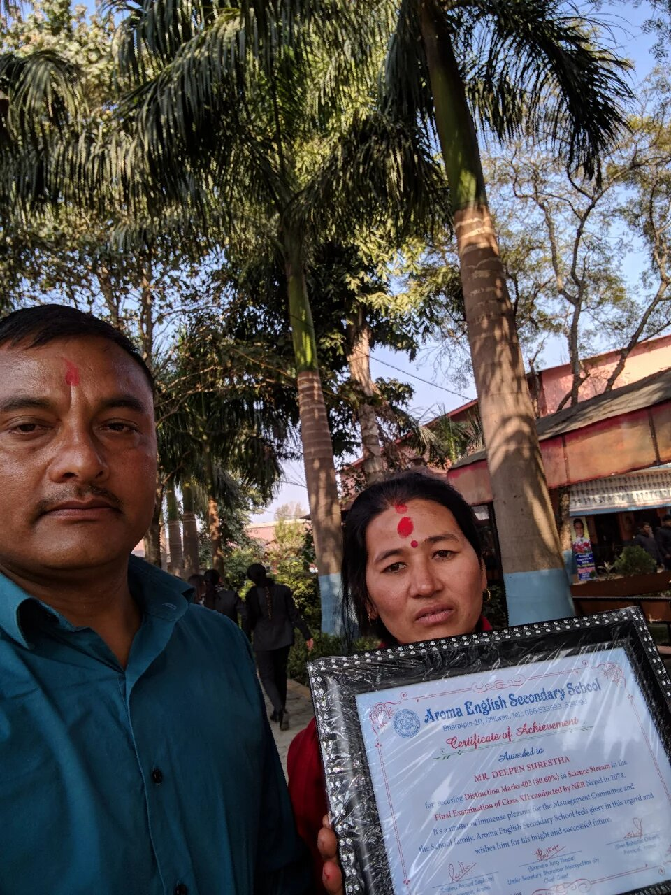

Academic Achievements
| Degree | Institution | Year | Grade/Percentage |
|---|---|---|---|
| Master of Technology in Computer Science and Engineering (MTech. CSE) | Indian Institute of Technology Kanpur (IIT Kanpur) | 2023-Present | 8.7/10 GPA |
| Bachelor of Engineering in Computer Science and Engineering (BE CSE) | New Horizon College of Engineering | 2017-2021 | 9.27/10 GPA |
| National Examinations Board (NEB) | Aroma English Secondary School | 2015-2017 | 80.60 % |
| School Leaving Certificate (SLC) | Siddhartha Boarding Higher Secondary School | 2015 | 80.25 % |
Recognition
- Received Silver Jubilee Scholarship from the Government of India for pursuing MTech CSE in IIT Kanpur. Fully funded Scholarship
- Received Recognition for getting distinction marks in my +2. +2 Recognition
- Received Recognition for getting distinction marks in my school. Please find it here.